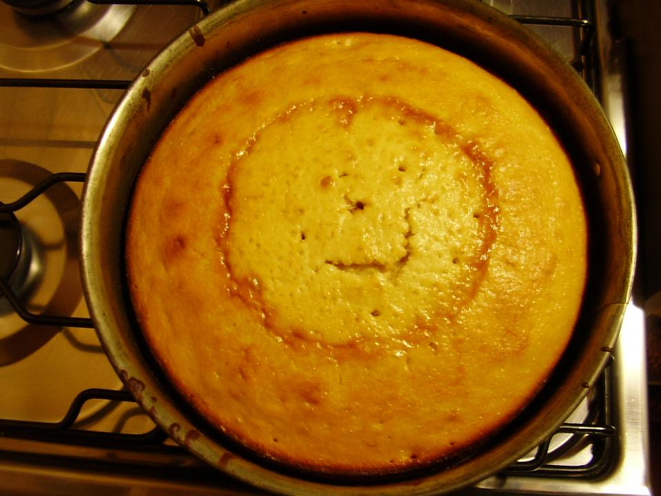

Regresar
Queque De Naranja

Descripcion
El queque de naranja mas delicioso y esponjoso en todo el mundo. Hecho con ingredientes simples, para satisfacer un antojo dulce.
ingredientes
- 3 huevos
- 1 taza de azucar
- 1 ralladura de 1 naranja
- 155gr de yoghurt
- 1/2 taza de aceite
- jugo de 1 naranja
- 1+1/2 taza de harina
- 2 cucharadita de polvo de hornear
- 1 cucharadita de sal
Pasos
- Precalentar el horno a 100°C y emspapelar el molde para queque.
- En un bol grande, infusionar la ralladura con el azucar.
- Agregar los huevos y batir hasta que se deshaga la mayor parte del azucar.
- Agregar el jugo de naranja y aceite hasta que desaparezca toda la azucar y sea una mezcla homogenea.
- En otro bol tamizar la harina, polvo y sal y agregar al primer bol y mezclar hasta que la mezcla vuelva a ser homogenea.
- vertir la mezcla en el molde y hornear durante 30 - 35 minutos o hasta que al insertar un palillo en el centro, este salga limpio.
- Dejar enfriar el queque en el molde durante 10 minutos antes de desmoldar y dejar enfriar completamente sobre una rejilla.
- Opcional: Decorar con azúcar glas o glaseado de naranja antes de servir.